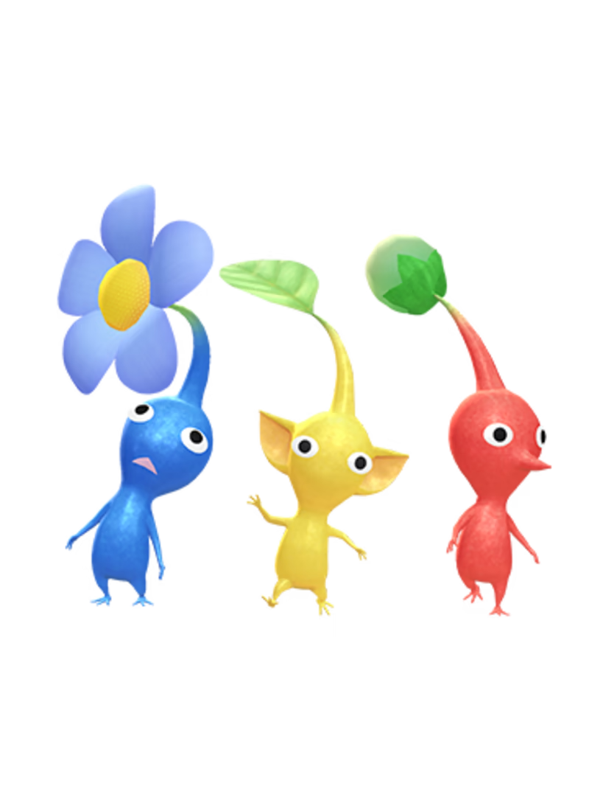

Once upon a time, in a faraway galaxy, there existed a tiny, lush planet known as PNF-404. This planet was home to a diverse array of flora and fauna, but the most remarkable inhabitants were the Pikmin. These small, colorful creatures lived in harmony with nature, working together to survive and thrive in their vibrant ecosystem.
The story of Pikmin begins with Captain Olimar, an intrepid space explorer from the planet Hocotate. While on an interstellar voyage, Captain Olimar's spaceship, the S.S. Dolphin, crash-landed on PNF-404. Upon awakening from the crash, Olimar discovered that his ship had been damaged, and crucial parts were scattered across the planet.
Alone and stranded on this unfamiliar world, Captain Olimar encountered the Pikmin. These curious beings approached him with a mixture of wonder and trepidation. Sensing their potential, Olimar realized that with the help of the Pikmin, he could recover the missing ship parts and repair his beloved S.S. Dolphin.
With the Pikmin by his side, Captain Olimar embarked on a journey across the hazardous terrain of PNF-404. Along the way, he encountered various obstacles and challenges, from treacherous predators to formidable environmental hazards. But with the Pikmin's unique abilities and unwavering loyalty, Olimar persevered, leading them through forests, caves, and even subterranean depths.
As they ventured deeper into the heart of the planet, Olimar and the Pikmin discovered that PNF-404 was not just a lush paradise but also a world filled with mysteries and secrets. They encountered ancient ruins, relics of a lost civilization, and strange phenomena that hinted at the planet's enigmatic past.
Throughout their journey, Olimar developed a deep bond with the Pikmin, learning to appreciate their strengths and quirks. The Pikmin, in turn, looked up to Olimar as their leader and protector, trusting him to guide them through the perils of their world.
Finally, after many trials and tribulations, Captain Olimar and the Pikmin succeeded in recovering all the missing ship parts. With the S.S. Dolphin fully repaired, Olimar bid farewell to his newfound friends, grateful for their assistance and companionship. As he soared back into the stars, Olimar carried with him not only memories of his adventure but also a profound appreciation for the resilience and unity of the Pikmin.
And so, the tale of Pikmin became legend, a testament to the power of cooperation and friendship in the face of adversity, inspiring future generations of explorers and adventurers to seek out the wonders of the cosmos.
